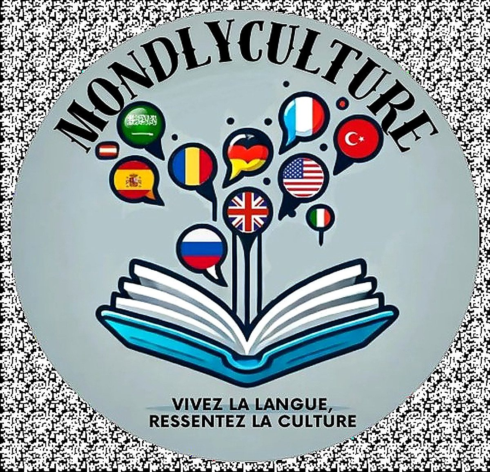
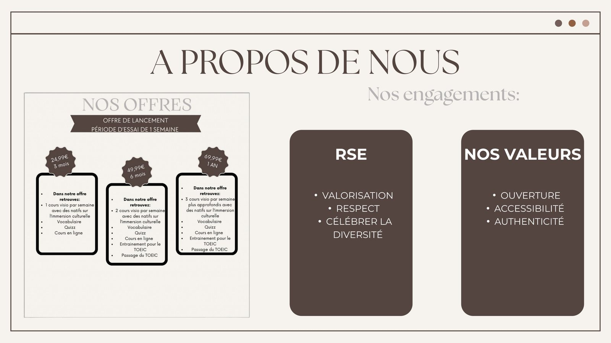
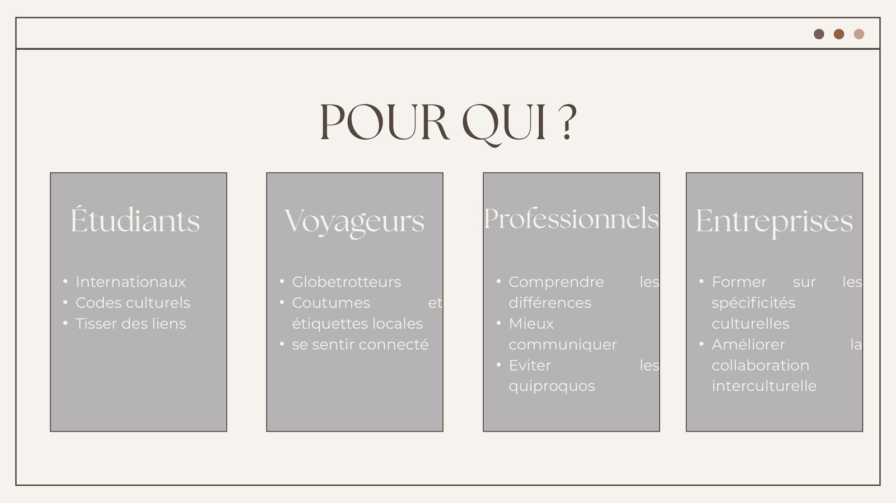
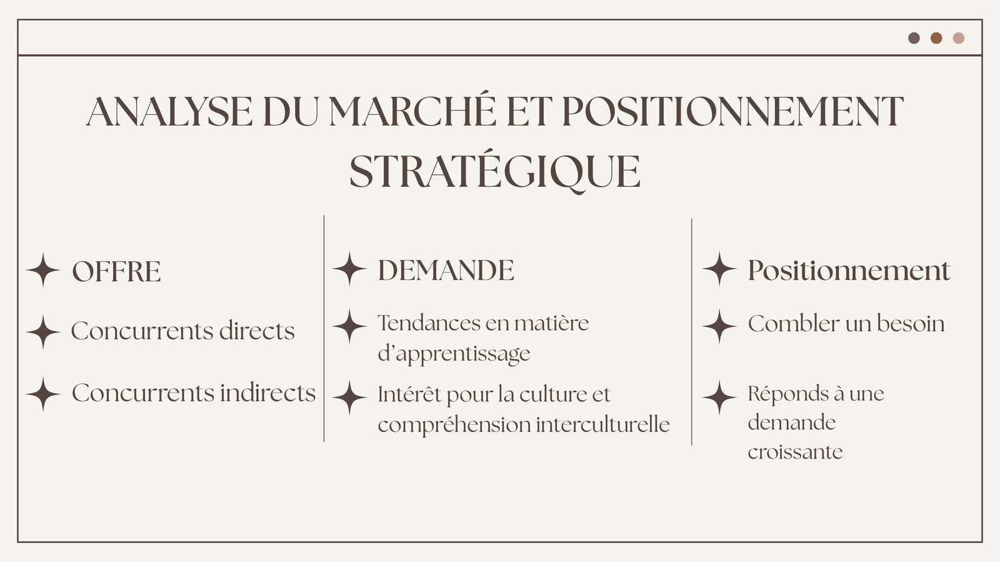
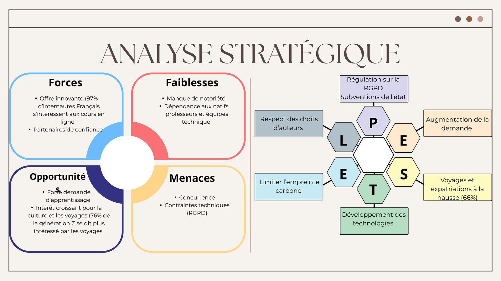
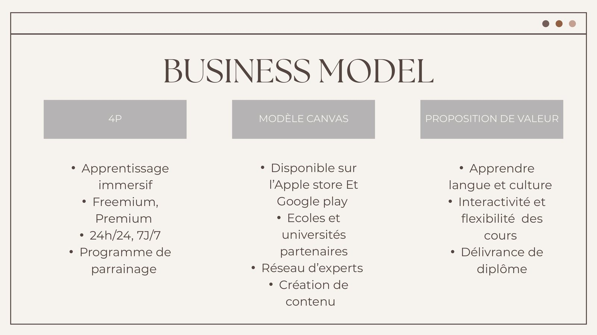
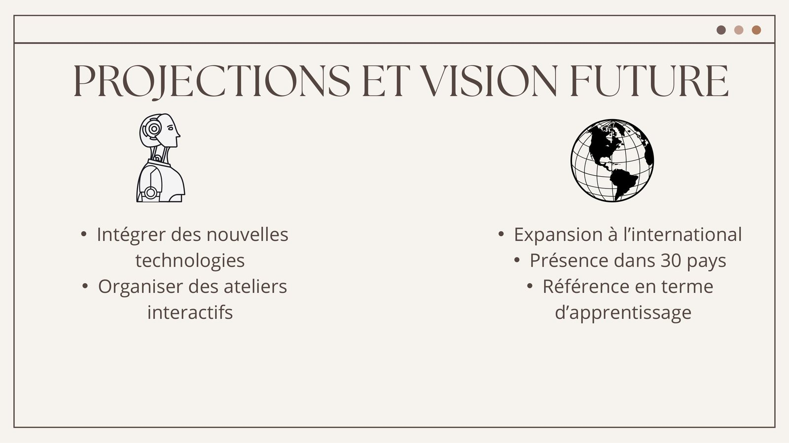

4étudiants dans l’équipe
26 750 €de capital social
3ans de prévisionnel
30pays visés à terme
Le contexte et la commande
- SAE S3.01 : concevoir un projet de création d’activité en mobilisant gestion, stratégie, marketing, finance et entrepreneuriat.
- Point de départ : un brainstorming d’équipe, l’analyse des tendances et l’identification d’un besoin réel à satisfaire.
- Aboutissement : un pitch professionnel devant un jury d’enseignants et de professionnels, support visuel à l’appui.
La problématique
Répondre à un besoin concret par la création d’une offre de valeur pertinente, du brainstorming initial jusqu’au pitch devant jury.
Le concept
- Double approche pédagogique : des cours de langue personnalisés conçus par des natifs, et des contenus culturels interactifs permettant une immersion réaliste.
- Modèle Freemium : accès gratuit aux fonctions de base, version Premium enrichie avec certifications, coaching et ateliers.
- Cibles : étudiants, expatriés, voyageurs et professionnels.


L’étude de marché
- Analyse PESTEL : RGPD et subventions, essor du numérique éducatif, intérêt croissant pour la diversité, concurrence des applications linguistiques.
- Analyse SWOT et étude de la concurrence directe (Duolingo, Babbel) et indirecte.
- Business Model Canvas puis Business Plan complet : bilan d’ouverture, comptes de résultat sur trois ans, seuil de rentabilité, plan de trésorerie sur 12 mois.


La vision
- Présence dans 30 pays, intégration des nouvelles technologies, délivrance de certifications officielles et ateliers interactifs.



Ce que j’ai produit
- Étude de marché complète : PESTEL, analyse de la concurrence directe et indirecte, personas et questionnaire terrain pour valider l’intérêt du projet.
- Business Model Canvas structuré autour des neuf blocs fondamentaux.
- Choix de la forme juridique après comparaison des statuts — SAS, 26 750 € de capital.
- Business Plan complet : plan de financement initial, budget de trésorerie sur douze mois, comptes de résultat sur trois ans et seuil de rentabilité.
- Stratégie de lancement : nom, logo, identité visuelle et plan d’action marketing.
Ce que j’en retire
- Conduire un projet entrepreneurial de bout en bout, en respectant une logique professionnelle.
- Défendre un projet à l’oral devant un jury et répondre aux objections.
- Travailler la cohérence entre l’offre, le marché visé et les prévisions financières.
Outils et méthodes mobilisés
Business Model CanvasPESTELPersonasBusiness PlanPitch